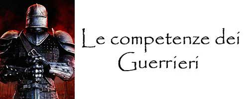
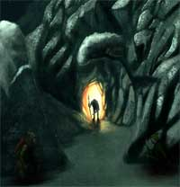

|
COMPETENZA |
TIPOLOGIA |
SLOT |
ABILITA' |
MOD |
|
Ambidexterity |
Guerrieri |
3 |
Destrezza |
0 |
|
Ambush |
Guerrieri |
1 |
Intelligenza |
0 |
|
Animal Lore |
Guerrieri |
1 |
Intelligenza |
0 |
|
Armor Optimization |
Guerrieri |
2 |
Destrezza |
-2 |
|
Armorer |
Guerrieri |
2 |
Forza |
-2 |
|
Artillery |
Guerrieri |
1 |
Intelligenza |
0 |
|
Battle Lore |
Guerrieri |
1 |
Intelligenza |
0 |
|
Battle Mastery |
Guerrieri |
1 |
Intelligenza |
0 |
|
Blind Fighting |
Guerrieri |
2 |
NA |
NA |
|
Bowyer/Fletcher |
Guerrieri |
1 |
Destrezza |
-1 |
|
Camouflage |
Guerrieri |
1 |
Intelligenza |
0 |
|
Camouflage |
Guerrieri |
1 |
Saggezza |
0 |
|
Charioteering |
Guerrieri |
1 |
Destrezza |
+2 |
|
Combat Tactics |
Guerrieri |
2 |
Intelligenza |
0 |
|
Dirty Fighting |
Guerrieri |
1 |
Intelligenza |
0 |
|
Emergency Reparation |
Guerrieri |
2 |
Forza |
0 |
|
Evasive Fighting |
Guerrieri |
1 |
Destrezza |
-3 |
|
Endurance |
Guerrieri |
2 |
Costituzione |
0 |
|
Feign
Attack |
Guerrieri |
1 |
Intelligenza |
-1 |
|
Fine Balance |
Guerrieri |
2 |
Destrezza |
0 |
|
Foraging |
Guerrieri |
1 |
Intelligenza |
-2 |
|
Gaming |
Guerrieri |
1 |
Carisma |
0 |
|
Ground
Attack |
Guerrieri |
1 |
Forza |
-1 |
|
Hunting |
Guerrieri |
1 |
Saggezza |
-1 |
|
Iron Will |
Guerrieri |
2 |
Saggezza |
0 |
|
Leadership |
Guerrieri |
2 |
Carisma |
-1 |
|
Mountaineering |
Guerrieri |
1 |
NA |
NA |
|
Navigation |
Guerrieri |
1 |
Intelligenza |
-2 |
|
Physical Vigour |
Guerrieri |
1 |
Costituzione |
-3 |
|
Quickness |
Guerrieri |
1 |
Destrezza |
-2 |
|
Rapid Arming |
Guerrieri |
1 |
Destrezza |
0 |
|
Running |
Guerrieri |
1 |
Forza |
0 |
|
Set Snares |
Guerrieri |
1 |
Intelligenza |
-1 |
|
Soften On Impact |
Guerrieri |
1 |
Costituzione |
-3 |
|
Special Armorer |
Guerrieri |
2 |
Forza |
-3 |
|
Spectacular Fighting |
Guerrieri |
2 |
Destrezza |
-3 |
|
Spelunking |
Guerrieri |
1 |
Intelligenza |
-2 |
|
Sprint |
Guerrieri |
1 |
Destrezza |
-2 |
|
Stand
Firm |
Guerrieri |
1 |
Forza |
-3 |
|
Steady Hand |
Guerrieri |
2 |
Destrezza |
0 |
|
Survival |
Guerrieri |
2 |
Intelligenza |
0 |
|
Tracking |
Guerrieri |
2 |
Saggezza |
0 |
|
Trail Marking |
Guerrieri |
1 |
Saggezza |
0 |
|
Trail Signs |
Guerrieri |
1 |
Intelligenza |
-1 |
|
War Training |
Guerrieri |
2 |
NA |
NA |
|
Weapon Improvisation |
Guerrieri |
1 |
Intelligenza |
0 |
|
Weaponsmithing |
Guerrieri |
3 |
Forza |
-3 |
Ambidexterity
(3 slots)
Abilità: Destrezza Modificatore:
0
Gruppo di classe:
Guerrieri, Ladri
Un personaggio con questa competenza è in grado di utilizzare i suoi due arti
superiori con uguale efficacia. Per tale motivo, quando costui combatte con due
armi riceve una penalità di -2 al tiro per colpire su entrambe le armi (anziché
della comune penalità di -2 sull'arma principale e di -4 su quella secondaria).
Si noti che per utilizzare questa competenza non occorre effettuare alcuna prova
nella stessa. Deve osservarsi che questa competenza può
essere acquistata solo in sede di creazione del personaggio e mai
successivamente alla stessa.
Ambush
(1 slot)
Abilità: Intelligenza
Modificatore: 0
Gruppo di classe:
Guerrieri, Ladri
Un personaggio con questa competenza è addestrato nel tendere imboscate ed
effettuare attacchi a sorpresa. Ogni volta che chi possiede quest’abilità
obbliga un avversario ad una prova di sorpresa costui riceve una penalità di –1
(senza che sia richiesta una prova in questa competenza). Questo beneficio si
applica solo quando tutti gli attaccanti sono dotati di tale competenza.
|
 |
Un’imboscata si verifica quando un gruppo di attaccanti, conoscendo e
sfruttando il terreno dello scontro, si organizzi nascondendosi al
nemico per cercare di sorprenderlo improvvisamente. Si noti che le
imboscate sono impossibili se gli attaccanti sono stati già visti dalle
loro vittime e vanno, dunque, preparate prima dell’arrivo di queste
ultime. Parimenti, l’imboscata fallirà automaticamente se i nemici hanno
modo di sospettare della concreta presenza degli attaccanti. Organizzare
un’imboscata richiede un intero turno di lavoro (nel quale il
personaggio deve poter camminare liberamente nella zona cercando ripari,
anfratti e altri nascondigli e deve poter dare ordini precisi a tutti
coloro prenderanno parte nell’imboscata) ed il superamento di una prova
nella competenza (ovviamente l’ambiente circostante deve rendere
possibile nascondere in modo efficace tutti gli attaccanti). Il
personaggio non deve conoscere precedentemente il risultato del suo
tiro, per tale motivo questo va posticipato al momento in cui
l’imboscata scatterà. Quando scatta l’imboscata, se il tiro nella
competenza è riuscito, gli attaccanti riceveranno un intero round
gratuito senza che i propri avversari (sorpresi dall’imboscata
perfettamente organizzata) possano reagire. Se il tiro è fallito,
invece, le vittime dovranno effettuare la regolare prova per evitare di
essere sorpresi. Chi è dotato della competenza alertness e sta per cadere in un’imboscata
ben organizzata (con prova riuscita) può effettuare una prova nella competenza
con un malus di –2. Se la prova riesce costui non perderà automaticamente
il round ma potrà effettuare il tiro sulla sorpresa senza usufruire, però, del
bonus al tiro previsto dalla competenza alertness. Se, invece,
l’imboscata è stata organizzata male (fallimento della prova) la competenza
alertness potrà essere utilizzata normalmente. Si noti, infine, che non è
possibile effettuare imboscate nei confronti di creature dotati di sensi tali da
rendere impossibile, o quasi, che costoro vengano sorprese (si pensi ad es. ai
draghi). |
Una
creatura che sia riuscita a nascondersi con successo alla vista degli avversari
attraverso una propria diversa abilità
(si pensi ad un vagabondo nascosto tra le ombre, ad una creatura invisibile o ad
una creatura mimetizzata) può utilizzare questa competenza direttamente senza
dover previamente effettuare la ricerca di un nascondiglio secondo le regole
precedentemente esposte.
Successo critico:
L’imboscata è riuscita ad opera d’arte, non solo gli avversari non potranno
reagire, ma nel round successivo dovranno effettuare una prova sulla sorpresa
per non perdere anche tale secondo round. Inoltre nega agli avversari la
possibilità di utilizzare, esclusivamente nel primo round dell’imboscata, la
competenza alertness da costoro eventualmente posseduta.
Fallimento critico:
Il personaggio ha sbagliato totalmente a pianificare l’imboscata, i nemici in
avvicinamento si renderanno conto del pericolo e non potranno in nessun caso
essere sorpresi.
Armor Optimization (2 slot)
Abilità: Destrezza Modificatore: -2
Gruppo di classe: Guerrieri
Questa competenza
permette al combattente di studiare l’avversario e di prendere le distanze da un
particolare nemico capendo come meglio schivare i suoi colpi. Quando un
avversario attacca chi possiede questa competenza con una qualsiasi forma di
attacco in corpo a corpo per due round consecutivi, a partire dal round
immediatamente successivo colui che ha subito gli attacchi potrà, superando la
prova di destrezza prevista come prima azione del round (free
action),
imporre a tale avversario una penalità di -1 a tutti i suoi tiri per colpire (si
considera a tutti gli effetti come un
bonus
dovuto alla destrezza)
con gli attacchi in corpo a corpo diretti nei confronti di chi possiede
questa competenza. Tale beneficio perdurerà per tutto il resto del combattimento
senza che siano richieste nuove prove nella competenza. Se, per qualsiasi
motivo, l’avversario non attaccherà in corpo a corpo il soggetto che aveva
utilizzato con successo questa competenza per almeno tre rounds consecutivi il
beneficio sarà perduto e la competenza dovrà essere riutilizzata
ex novo
a partire dagli eventuali nuovi attacchi; lo stesso accade anche qualora il
personaggio decida, durante il combattimento, di difendersi da un diverso
avversario. La competenza, infatti, può essere attivata solo nei confronti di un
singolo avversario ma durante il combattimento chi la possiede può decidere di
cambiare il nemico dal quale si protegge (effettuando per ogni cambiamento una
nuova prova nella competenza). Se il personaggio fallisce la prova costui
potrà provare a prendere nuovamente le distanze dal suo avversario ma dovrà
riutilizzare la competenza ex novo
a partire dagli eventuali nuovi attacchi dell'avversario (dovrà quindi
essere attaccato nuovamente per due round consecutivi, successivi rispetto a
quello in cui ha fallito la prova, prima di poterne effettuare una nuova).
Successo critico:
Il personaggio riuscirà ad imporre al suo avversario una penalità di -2 a tutti
i tiri per colpire con attacchi in corpo a corpo rivolti contro costui.
Fallimento critico:
Il personaggio sbaglierà tecnica difensiva e l'avversario godrà di un
bonus
di +1 al tiro
per colpire su tutti gli attacchi in corpo a corpo rivolti contro costui durante
ogni combattimento avvenuto nella medesima giornata. Il personaggio, inoltre,
non potrà più utilizzare questa competenza nei confronti del medesimo avversario
nella medesima giornata.
Battle Lore
(1 slot)
Abilità: Intelligenza
Modificatore: 0
Gruppo di classe:
Guerrieri, Ladri
Un personaggio con questa competenza ha una certa familiarità con le tecniche di
combattimento ed, in particolare, con l'utilizzo dei punti combattimento.
Orbene, questa competenza
può essere utilizzata, nella fase di attesa, per cercare di capire quale
tipologia di colpi di combattimento (speciali e generali) o manovre di
combattimento una creatura sta per utilizzare. Solo i colpi e le manovre di
combattimento che devono essere dichiarate all'inizio del round possono essere
riconosciuti tramite l'uso di questa competenza. Qualora, infatti, nella fase di
attesa, chi possiede questa competenza si rende conto che una creatura sta per
utilizzare punti combattimento o sta per porre in essere una determinata
manovra di combattimento costui potrà effettuare (sempre nella fase di attesa)
una prova in questa competenza (qualora siano più creature ad usare punti
combattimento sarà
necessario selezionarne una sola). Se la prova ha successo, chi possiede questa
competenza sarà a conoscenza degli specifici colpi di combattimento (speciali e
generali) o della particolare manovra di combattimento che la creatura sta per
effettuare, conoscendone anche i rispettivi effetti.
Battle Mastery (1 slot)
Abilità: Intelligenza Modificatore: 0
Gruppo di classe: Guerrieri
I personaggi con questa
competenza sono esperti di tattiche di combattimento e sanno come indirizzare
chi combatte nelle loro vicinanze. Qualora un personaggio, non appartenente a
nessuna classe dei warrior, combatta entro 9 metri da chi possiede questa
competenza costui potrà ricevere dei rapidi consigli che gli permetteranno di
ottenere dei benefici in battaglia. Questi consigli possono essere dati ogni
round. Si tratta di una
free action
(link)
che può essere dichiarata unicamente nella fase delle intenzioni (nella medesima fase chi
riceve il consiglio deve, prima della prova effettata in questa competenza,
decidere se lo ascolterà o meno) che richiede l'utilizzo di componenti vocali
(la comunicazione orale del suggerimento) e che impone a chi la utilizza una
penalità all'iniziativa delle altre sue azioni del round pari a +1. Qualora l’esperto in tattiche di battaglia superi una prova in
questa competenza, chi riceve il consiglio (che ogni round deve essere
indirizzato ad una creatura che sia già impegnata in un combattimento corpo a
corpo nel round in cui viene fornito) otterrà nel medesimo round di
combattimento un
bonus ad un proprio tiro. Il tipo di bonus varia a seconda della
specializzazione nella competenza (usando uno slot supplementare può acquisirsi
una diversa specializzazione rispetto alla prima selezionata, se il personaggio
possiede più specializzazioni dovrà decidere quale consiglio dispensare potendo
costui fornire ad una determinata persona un solo consiglio al round, inoltre
una creatura può utilizzare un solo consiglio ogni round, se quindi, per
ipotesi, un soggetto riceva da due esperti due diversi consigli costui dovrà
scegliere quale bonus utilizzare prima di tirare). Le specializzazioni
possibili sono le seguenti:
Attacco:
Bonus di +1 ad un singolo tiro per colpire con armi da corpo a corpo (non può
essere usato con incantesimi a tocco), questo beneficio sarà applicato, sempre e
comunque, sul primo attacco effettuato nel corso del round dalla creatura.
Difesa:
Bonus di +1 alla classe armatura nei confronti di un singolo attacco
ricevuto nel corso del round con armi da corpo a corpo o da attacchi fisici
(sono compresi i tocchi ma sono escluse le armi da lancio e da tiro), chi riceve
il bonus (che sarà considerato a tutti gli effetti come un bonus dovuto
alla destrezza) può decidere a quale attacco applicarlo prima che l'avversario
abbia effettuato il relativo tiro per colpire.
Danno:
Bonus di +2 ai danni ad un singolo colpo effettuato con un’arma in corpo a corpo
od attacchi fisici (questo bonus è considerato come dovuto alla forza ai
fini del massimale dei dadi di danno dell’arma non potendo permettere di
superarlo), questo beneficio sarà applicato, sempre e comunque, sul primo
attacco effettuato nel corso del round dalla creatura.
Successo critico:
Il consiglio fornito sarà estremamente buono ed efficace, il bonus
ricevuto dalla creatura sarà aumentato di un +1 supplementare in caso di attacco
e difesa e di +2 in caso di danno.
Fallimento critico:
Il consiglio fornito sarà totalmente sbagliato senza che, ovviamente, la
creatura che lo riceve possa rendersene conto (si noti che la creatura verso cui
è indirizzato il consiglio potrà decidere di non ascoltarlo ma solo prima che il
personaggio con questa competenza abbia effettuato la prova). Per tale motivo
costei, invece di ricevere il beneficio otterrà una penalità di -1 in caso di
attacco e difesa e di -2 in caso di danno (fermo restando un minimo danno di
1 punto ferita se il colpo va a segno).
Combat Tactics (2 slot)
Abilità: Intelligenza Modificatore: 0
Gruppo di classe: Guerrieri
I personaggi che hanno
questa competenza sono particolarmente esperti nell’arte del combattimento,
possono individuare di volta in volta (se riesce il tentativo) la migliore
tattica da utilizzare in battaglia per vincere il nemico. Si tratta di tattica
per piccoli scontri e non strategia di battaglia su larga scala.
Superando un prova in
questa competenza coloro che dispongono di attacchi multipli non simultanei
possono decidere di dirigere gli attacchi successivi al primo contro bersagli
che si trovino in melee con loro anche diversi da quelli che, nella fase
delle intenzioni, avevano dichiarato di attaccare. Su tali attacchi, però,
subiranno una penalità di –1 al tiro per colpire. Si noti, però, che quando
questa competenza è usata da personaggi che effettuano 3 attacchi ogni 2 rounds
durante il secondo round di combattimento, nonostante il secondo colpo possa
essere deviato su una creatura diversa dalla prima, nel round successivo costoro
si considereranno in ogni caso al loro primo round di combattimento ottenendo un
solo attacco.
Inoltre questi personaggi
potranno risparmiare punti combattimento quando li usano in battaglia, se
riescono infatti in un tiro su questa competenza risparmieranno 1 punto
combattimento. E’ possibile provare a risparmiare il punto combattimento solo
una volta per round. Si noti che i personaggi possono provare solo a risparmiare
punti combattimento senza poter provare, quindi, ad effettuare utilizzando
questa competenza colpi per i quali non dispongono inizialmente di tutti i punti
combattimento normalmente richiesti.
Successo critico:
Il personaggio il personaggio potrà risparmiare fino a 3 punti combattimento da
quelli utilizzati nel colpo prescelto.
Fallimento critico:
Il personaggio avrà speso 3 punti combattimento supplementari rispetto a quelli
che aveva deciso di utilizzare, in ogni caso il colpo prescelto sarà effettuato
anche qualora il personaggio non disponga dei punti supplementari richiesti.
Dirty Fighting (1 slot)
Abilità: Intelligenza Modificatore: 0
Gruppo di classe: Guerrieri, Ladri
Soldati veterani, picchiatori, guerrieri di professione sono consapevoli che una
mossa scorretta durante uno scontro può portare ad un vantaggio ed alla
vittoria. Chi conosce questa competenza, dunque, è in grado di usare tecniche di
combattimento scorrette (come ad es. tirare terra negli occhi degli avversari,
attaccare in zone sconvenienti, fingere di essere in difficoltà, ecc... ecc...).
Il personaggio può dichiarare di utilizzare questa tecnica sporca su un
qualsiasi suo attacco. Dovrà quindi effettuare la prova richiesta dall’abilità,
se la prova ha successo sorprenderà l’avversario e riceverà un bonus di
+1 al tiro per colpire e +1 ai danni sull’attacco prescelto. Una volta
utilizzata questa tecnica la vittima, tutti gli altri avversari presenti nel
corpo a corpo, e tutti coloro che hanno notato la manovra di combattimento,
sapranno di che pasta è fatta il personaggio e si comporteranno di conseguenza.
Per tale motivo il personaggio non potrà più utilizzare contro costoro questa
tecnica di combattimento (indipendentemente dal fatto che la prova in questa
competenza sia riuscita o fallita). Infine, questa abilità non può essere
utilizzata contro altre creature che la posseggono e contro creature contro le
quali il personaggio non è in grado di effettuare manovre sporche poiché
combattono in maniera del tutto diversa dal solito o perché sono immuni alle
stesse (si pensi ad una melma, ad una pianta, ad un costruito od ad un
fantasma). Si noti, infine, che il bonus ai danni sarà considerato in
ogni caso come se fosse un beneficio derivante dalla forza per i limiti del
massimale di danno previsto dall'uso delle armi.
Successo critico:
Il personaggio effettua una manovra che sorprende del tutto l’avversario,
ottenendo +2 al tiro per colpire ed ai danni con l’attacco prescelto.
Fallimento critico:
Il personaggio sbaglia completamente il proprio movimento ed ottiene una
penalità di –4 al tiro per colpire con l’attacco prescelto.
Emergency Reparation (2 slot)
Abilità: Forza Modificatore: 0
Gruppo di classe: Guerrieri
Tramite questa competenza
è possibile effettuare le riparazioni di emergenza alle armi ed alle corazze.
Non si tratta di un lavoro di precisione ma di riparazioni effettuate tramite la
forza bruta e l’esperienza accumulato usando le armi ed indossando le corazze.
Per poter utilizzare questa competenza il personaggio deve disporre di
arnesi da fabbro d'emergenza (martelletti, pinze,
lime) dal costo di 50 g.p. e dal peso di 15 lbs. (costo della manutenzione 0.7
g.p. al mese).
L'affilatura delle armi. Con questa competenza è
innanzitutto possibile riaffilare le armi che, nel corso del combattimento,
hanno perso l’affilatura. Occorre 1 ora di lavoro e il superamento di una prova
nella competenza con i seguenti modificatori: per le armi superbe si avrà un
malus di -1 alla prova; per le armi di materiali speciali (ad es. arcanite,
mithril, adamantium...) si avrà un ulteriore malus di -1 alla prova. Se
la prova non riesce l’arma potrà essere affilata esclusivamente da chi possiede
la competenza necessaria a costruirla (oppure utilizzando le arti magiche).
Quando la competenza viene utilizzata in questo modo sono irrilevanti i tiri di
fallimento e di successo critico se non ai fini di determinare un fallimento od
un successo automatico della prova. Questa competenza, inoltre, non può essere
utilizzata su armi che sono oggetto di tentativo di affilatura tramite l'abilità Advanced
Mechanical della classe talentuosa dei ladri The Engineer.
La riparazione delle corazze. Per quanto concerne
le corazze, dopo un giorno di lavoro su un’unica corazza, superando la prova
sull’abilità in questa competenza, saranno stati riparati tutti i punti corazza
che questa ha perso all’interno dello stesso punteggio di AC. Qualora la prova
fallisce la riparazione avrà luogo ma si perderà definitivamente un punto
corazza. La riparazione delle Field Plate e delle Full Plate,
essendo particolarmente difficile, darà una penalità di -1 alla prova
sulla competenza. La riparazione delle corazze speciali costruite con l’abilità
special armorer avverrà con un malus di -3 alla prova sulla competenza.
Se l’armatura ha subito un bagno in titanio la prova subirà una penalità
supplementare di -2. In ogni caso, può essere effettuata una sola
riparazione con questa competenza su ogni corazza prima che la stessa non venga
riparata integralmente da chi ha la competenza necessaria a costruirla. Questa
competenza, inoltre, non può essere utilizzata su una corazza che è stata
oggetto di riparazione di emergenza tramite l'abilità Advanced
Mechanical della classe talentuosa dei ladri The Engineer prima che la stessa
non venga riparata integralmente da chi ha la competenza necessaria a
costruirla. Chi possiede anche la competenza necessaria a costruire la corazza (Amorer
o Special Armorer) e supera una prova anche in questa competenza ottiene un
bonus di +1 alla prova di riparazione. Chi possiede anche la competenza
complementare alla costruzione dell’armatura che vuole riparare (come Seamstress/Tailor,
oppure Leatherworking, o Blacksmithing) e supera una prova anche in questa
competenza ottiene un ulteriore bonus di +1 alla prova di riparazione. Questa
competenza non può essere utilizzata per riparare gli scudi. In nessun caso
questa competenza può essere utilizzata per riparare corazze magiche.
Successo critico:
La riparazione avrà luogo considerando riparati al pieno due punti di AC (quindi
la corazza proteggerà un punto di AC in più) facendo però comunque perdere il
punto corazza richiesto normalmente nelle riparazioni.
Fallimento critico:
La riparazione non
avrà luogo e si perderà in ogni caso un punto corazza definitivo.
Evasive Fighting
(1 slot)
Abilità: Destrezza Modificatore: -3
Gruppo di classe: Guerrieri, Ladri
Chi conosce questa
competenza è in grado di compiere manovre evasive di combattimento. Ogni volta
che, spostandosi durante una battaglia (la competenza non si utilizza, quindi,
quando il personaggio riceve attacchi di opportunità per motivi diversi
dall'essersi spostato dalla sua posizione di combattimento), il personaggio
dovrebbe subire un attacco di opportunità costui potrà provare ad evitarlo
superando una prova nella competenza in questione. Con questa competenza possono
evitarsi anche molteplici attacchi alle spalle nello stesso round ma per
ogni attacco deve effettuarsi una separata prova nella competenza stessa.
Successo critico:
Il personaggio avrà evitato anche gli eventuali successivi attacchi alle spalle
che avrebbe dovuto subire senza che sia richiesta alcuna altra prova nella
competenza.
Fallimento critico:
Il personaggio, cercando di evitare gli attacchi alle proprie spalle, si scopre
maggiormente. Il singolo attacco che voleva evitare riceverà un ulteriore
bonus di +2 al tiro per colpire.
Endurance (2 slots)
Abilità: Costituzione Modificatore: 0
Gruppo di classe: Guerrieri, Ladri
Chi possiede questa
competenza può provare a resistere all’affaticamento durante il combattimento.
Una volta raggiunta la prima soglia di affaticamento costui potrà effettuare una
prova sulla competenza, se la prova riesce potrà disporre di 5 punti fatica
supplementari, altrimenti si sarà affaticato normalmente. Si noti che tale prova
non può effettuarsi nuovamente se non dopo un riposo completo del proprio corpo
(recupero di tutti i punti fatica accumulati). Chi dispone di questa competenza, inoltre, ed effettua un
qualsiasi tiro salvezza per resistere ad un veleno od una malattia potrà
decidere (prima di effettuare il tiro salvezza) di utilizzare questa competenza
per ottenere, superando una prova nella stessa, un bonus di +1 al
relativo tiro salvezza.
Successo critico:
In caso di utilizzo della competenza per evitare l'affaticamento il personaggio
otterrà 7 punti fatica supplementari anziché 5. In caso di utilizzo della
competenza al fine di resistere a veleni o malattie il personaggio avrà
automaticamente effettuato il tiro salvezza.
Fallimento critico:
In caso di utilizzo della competenza per evitare l'affaticamento il personaggio
non solo non otterrà punti fatica ma subirà ulteriori 2 punti di affaticamento.
In caso di utilizzo della competenza al fine di resistere a veleni o malattie il
personaggio avrà automaticamente fallito il tiro salvezza.
Feign Attack
(1 slot)
Abilità: Intelligenza
Modificatore: -1
Gruppo di classe:
Guerrieri, Ladri
Un personaggio
che conosce questa competenza
potrà riuscire, dopo aver
studiato il suo avversario, a comprenderne lo stile di combattimento e di
risposta in battaglia. Costui, quindi, può decidere di mettere in atto una finta
azione d'attacco alla quale l’avversario risponde sempre allo stesso modo,
riuscendo quindi a far scoprire l’avversario al fine di portare contro di lui il
vero attacco (cd. "attacco di seconda intenzione") in maniera molto più efficace
del comune. In termini di gioco, quando un avversario attacca chi possiede
questa competenza utilizzando la medesima arma da corpo a corpo per almeno due
round consecutivi (non potendosi usare contro attacchi fisici, armi da lancio e
da tiro), a partire dal round immediatamente successivo (e fino a che
l'avversario continua a combattere con la stessa arma da corpo a corpo) colui
che ha subito gli attacchi potrà decidere, superando la prova di intelligenza
prevista dalla competenza, di effettuare la finta al fine di ottenere ad un suo
singolo attacco un bonus di +2 alla thac0. La prova dovrà essere effettuata
immediatamente prima del tiro per colpire al quale il personaggio vuole
applicare il bonus. Si noti che il bonus sarà valido sempre e comunque contro un
unico avversario anche qualora il personaggio riesca a colpire con l'attacco
ulteriori bersagli (ad esempio attraverso il colpo speciale di combattimento
fendente frontale). Se la prova fallisce l'attacco sarà portato normalmente
senza alcun bonus o penalità.
Basandosi sull'effetto
sorpresa della finta,
questa abilità può essere utilizzata solo una volta in ogni combattimento e se
utilizzata in un melee
dove sono presenti più nemici, una volta usata contro uno di questi non
potrà essere utilizzata nei confronti di tutti gli altri.
Successo critico:
Il personaggio effettua una finta da manuale ed
ottiene un bonus di +4 alla Thac0 all'attacco portato utilizzando questa
competenza.
Fallimento critico:
Il personaggio erra totalmente la manovra di finta ed
ottiene una penalità di -4 alla Thac0 all'attacco portato utilizzando questa
competenza.
Ground Attack
(1 slot)
Abilità: Forza Modificatore: -1
Gruppo di classe: Guerrieri
Il personaggio che
possiede questa competenza riesce a combattere efficacemente, grazie alla sua
forza, anche quando si trova a terra (knockdown). All'inizio di ogni
round in cui il personaggio si trova in questa posizione, quindi, costui potrà
effettuare la prova nella competenza qualora decida di combattere da terra (si
noti, infatti, che questa competenza può essere utilizzata solo qualora il
personaggio che si trova a terra provi ad effettuare attacchi durante il round
in questione). Se la prova riesce, il personaggio potrà attaccare da terra senza
subire alcuna penalità al tiro per colpire, inoltre gli avversari non otterranno
alcun bonus al loro tiro per colpire contro costui. In ogni caso, però, il
personaggio non conserverà i bonus eventuali dovuti alla destrezza fino a che
resterà steso a terra. Infine, se nel round in cui il personaggio ha utilizzato
con successo questa competenza, considerando il tiro effettuato sulla prova il
personaggio avrebbe superato la stessa anche con una penalità complessiva di -5
ed al contempo costui è riuscito a colpire da terra un suo avversario con almeno
un attacco, questi si rialzerà automaticamente alla fine del round con un'azione
gratuita attuata mediante il grande sforzo fisico utilizzato per mettere a segno
il colpo.
Successo critico:
Il personaggio riesce ad imprimere a tutti i suoi attacchi nel round una forza
incredibile ottenendo un bonus di +2 ai danni, tale bonus sarà
considerato a tutti gli effetti come dovuto alla forza del personaggio.
Fallimento critico:
Il personaggio compie un'azione così maldestra da non riuscire ad effettuare
alcun attacco nel round in corso, inoltre i suoi avversari riceveranno un
bonus supplementare di +1 al tiro per colpire e +1 ai danni a tutti gli
attacchi rivolti verso il personaggio steso a terra.
Hunting (1 slot)
Abilità: Saggezza Modificatore: -1
Gruppo di classe: Guerrieri, Ladri
I personaggi che posseggono
questa competenza sono esperti cacciatori ed hanno la capacità di trovare le
loro prede. Questa competenza può essere utilizzata sono in zone ove sia
possibile cacciare (boschi, foreste, montagne, pianure). Il Dungeon Master può
applicare una penalità da -1 a -5 alla prova nella competenza qualora il
personaggio provi ad utilizzarla in zone od in periodi temporali nei quali è più
difficile cacciare. Per utilizzare questa competenza il personaggio deve
impiegare un'intera giornata lasciando, all'alba, il proprio campo base ed
addentrandosi nella zona di caccia. Il personaggio setaccerà la zona di caccia
allontanandosi fino a mezza giornata di cammino per poi far ritorno al tramonto
al campo. Potrà, quindi, effettuare una prova nella competenza, se la prova
riesce il cacciatore avrà incontrato, durante la giornata di perlustrazione, una
preda. Si tratterà, in ogni caso, di un incontro animale di piccola o grossa
taglia (ad esclusione dei serpenti) determinato, assieme al tempo ed alle
modalità di incontro, sulla tabella degli incontri oppure scelte dal Dungeon
Master. Se il personaggio caccia con altre creature che possiedono la competenza
solo il personaggio con la prova migliore effettuerà il tiro ricevendo un bonus
di +1 per ogni altro cacciatore presente che riesce nella prova sulla competenza
(fino ad un bonus massimo di +4). Per ogni creatura sprovvista della competenza
che accompagna il cacciatore, invece, costui riceverà una penalità di -2 alla
prova. Si tenga presente che il cacciatore che ha effettuato la prova con
successo avrà anche avvistato per primo la sua preda. Questa competenza non può
essere utilizzata in caso di viaggio richiedendo che il cacciatore setacci la
zona di caccia badando alle prede senza scegliere previamente il percorso da
effettuare. Si noti, infine, che questo tiro non sostituisce i normali tiri per
gli incontri erranti che saranno effettuati regolarmente durante la giornata di
caccia.
Successo critico:
Il personaggio effettua una manovra di caccia che sorprende del tutto la propria
preda potendosi considerare la stessa vittima di un'imboscata.
Fallimento critico:
Il personaggio sbaglia totalmente a riconoscere le tracce delle proprie prede e
per errore seguirà senza saperlo una diversa creatura. Si determini quindi un
normale incontro errante effettuato dal personaggio considerando che l'incontro
avrà visto per primo il sopraggiungere del personaggio.
Iron Will (2 slots)
Abilità: Saggezza Modificatore: 0
Gruppo di classe: Guerrieri, Chierici
Alcune creature possiedono l'impressionante abilità di continuare a combattere e
restare pienamente operative anche dopo aver subito ferite tali da costringere
una normale creatura a collassare al suolo in stato comatoso. Quando a seguito
di un attacco il personaggio che possiede questa competenza raggiunge zero od un
punteggio negativo di punti ferita (fino ad un massimo di -9) costui potrà
effettuare una prova nella stessa. Alla prova si applicherà una penalità pari al
valore negativo di punti ferita al quale il personaggio è stato portato. Se la
prova riesce, il personaggio non cadrà al suolo in stato comatoso ma potrà
continuare ad agire normalmente nel round in corso. La prova va ripetuta
all'inizio di ogni round, come prima azione del round, nonché, all'interno di
ogni singolo round, ogni volta che il personaggio subisce la perdita di
ulteriori punti ferita. Fino a che il personaggio supererà le relative prove
nella competenza costui potrà agire normalmente e sarà considerato stabilizzato
(non subirà, quindi, la perdita del punto ferita alla fine di ogni round per la
regola del coma). Appena il personaggio fallirà una delle prove, lo stesso cadrà
in coma ed allo stesso saranno applicate le regole dello stato comatoso. Si noti
che, qualora il personaggio raggiunga un ammontare negativo di punti ferita pari
o superiore a -10, lo stesso morirà istantaneamente e definitivamente, senza
cadere in stato comatoso.
I personaggi
con questa competenza, inoltre, che riescano nella relativa prova ricevono un
bonus di +1 a tutti i tiri salvezza contro incantesimi mentali od altri
effetti magici o naturali che possano manipolare la propria mente (si pensi a
droghe allucinoggene).
Successo critico:
In caso di utilizzo della competenza per evitare di cadere in stato comatoso il
corpo del personaggio reagirà in maniera incredibile e lo stesso sarà portato
immediatamente al valore positivo di 1 punto ferita. In caso di utilizzo
della competenza al fine
di
resistere ad effetti mentali il personaggio avrà automaticamente effettuato il
relativo tiro salvezza.
Fallimento critico:
In caso di utilizzo della competenza per evitare di cadere in stato comatoso il
corpo del personaggio collasserà e lo stesso morirà
istantaneamente e definitivamente, senza cadere in stato comatoso.
In caso di utilizzo della competenza al fine di resistere ad effetti mentali il
personaggio avrà automaticamente fallito il relativo tiro salvezza.
Leadership
(2 slot)
Abilità: Carisma
Modificatore: -1
Gruppo di classe:
Guerrieri
|
 |
I personaggi che possiedono questa competenza sono in grado di incitare
i loro alleati nel corso della battaglia al fine di farli lottare con
maggiore ardore e resistere più strenuamente. Utilizzare questa
competenza rappresenta un'azione complessa dalla durata di un intero
round, che necessita della capacità di parlare, al termine del quale il
personaggio dovrà superare la prova richiesta; gli effetti della
competenza si otterranno a partire dal round successivo. Questa
competenza non ha effetti sul medesimo personaggio che la utilizza. In
particolare, il personaggio è in grado di incitare un numero massimo di
compagni pari al numero massimo di lingue concessogli dal punteggio di
intelligenza posseduto. Il personaggio effettuerà la scelta delle
creature che desidera incitare alla fine del round nel quale utilizza la
competenza (prima di effettuare la prova nella stessa). Perché le
creature siano motivabili occorre che siano rispettati i seguenti
requisiti:
- Le creature devono essere alleate e devono trovarsi entro 30 metri dal
personaggio, devono essere in grado di vederlo e di sentirne la voce e
di capire le incitazioni del personaggio;
- Le creature devono possedere un punteggio di intelligenza pari a
minimo Low Intelligence (5);
- Le creature non devono possedere un ammontare complessivo di dadi
vita/livelli superiori a quelli del personaggio;
- Le creature non devono risultare sotto controllo diretto di un diverso
soggetto (si pensi alle magie di controllo mentale od alle creature
convocate magicamente) né risultare motivate da un altro soggetto.
Orbene, se la prova riesce con successo tutte le creature riceveranno i
seguenti benefici per tutto il resto del combattimento sempre che si
trovino entro 30 metri dal personaggio essendo in grado di vederlo e
sempre che il personaggio risulti regolarmente in grado di combattere.
- Le creature potranno annullare un punto di penalità imposto al loro
tiro per colpire dovuto ad effetti aventi qualsiasi origine o fonte, sia
magica che naturale (si pensi agli effetti di una magia di
Malison,
oppure ad un posizionamento tattico svantaggioso).
- Le creature recupereranno immediatamente e definitivamente 3 punti
fatica precedentemente accumulati (questo effetto si verifica una sola
volta alla fine del round in cui la prova è stata effettuata).
- Le creature dotate della competenza
Combat Tactics
riusciranno automaticamente a superare le relative prove effettuate al
solo fine di risparmiare punti combattimento nel corso della battaglia
(sono comunque fatti salvi i risultati critici di successo e fallimento,
per cui le prove andranno comunque tirate).
- Le creature riceveranno i benefici della competenza
Iron Will
che potranno utilizzare valutando il punteggio nell'abilità richiesta
dalla stessa pari alla metà del punteggio da loro effettivamente
posseduto. Le creature già dotate della competenza
Iron Will
riceveranno, invece, un bonus di +3 a tutte le prove effettuate nella
stessa.
- Le creature riceveranno un bonus di +5% a tutti i tiri salvezza su
mente e su coraggio effettuati nel corso della battaglia.
Qualora, invece, la prova fallisce il personaggio non potrà più provare
ad utilizzare questa competenza nel corso della medesima battaglia.
Successo critico:
In caso di successo critico le creature riceveranno i suddetti benefici con i
seguenti modificatori:
- Le creature potranno annullare fino a due punti di penalità imposti al
loro tiro per colpire.
- Le creature recupereranno immediatamente e definitivamente 5 punti
fatica precedentemente accumulati.
- Le creature riceveranno i benefici della competenza
Iron Will
che potranno utilizzare con un un bonus di +1 a tutte le prove valutando
il punteggio nell'abilità richiesta dalla stessa pari alla metà del
punteggio da loro effettivamente posseduto. Le creature già dotate della
competenza
Iron Will
riceveranno, invece, un bonus di +4 a tutte le prove effettuate nella
stessa.
- Le creature riceveranno un bonus di +10% a tutti i tiri salvezza su
mente e su coraggio effettuati nel corso della battaglia.
Fallimento critico:
In caso di fallimento critico il personaggio non solo non avrà motivato i propri
alleati ma li avrà demoralizzati, costoro dovranno infatti superare un tiro
salvezza su coraggio per non subire le seguenti penalità per tutto il resto
della battaglia:
- Le creature otterranno un malus di -1 a tutti i loro tiri per colpire.
- Le creature dotate della competenza
Combat Tactics
riceveranno un malus di -4 a tutte le prove effettuate nella stessa;
- Le creature dotate della competenza
Iron Will
riceveranno un malus di -4 a tutte le prove effettuate nella stessa;
- Le creature riceveranno un malus di -5% a tutti i tiri salvezza su mente e su
coraggio effettuati nel corso della battaglia. |
Physical Vigour (1
slot)
Abilità: Costituzione Modificatore: -3
Gruppo di classe: Guerrieri
I possessori di questa
competenza sono dotati di una prestanza fisica superiore rispetto a quella
normalmente posseduta da creature dotate delle medesime caratteristiche fisiche.
Per mantenere questa loro prestanza, però, occorre che gli stessi si preparino
fisicamente ogni mattina. Ogni giorno, dopo essersi svegliati, costoro dovranno,
per poter utilizzare questa competenza, effettuare un'ora di esercizio fisico
(potendo indossare al massimo una corazza con la quale sia anche possibile
riposare). Al termine di quest'ora di esercizio, i personaggi potranno
effettuare una prova in questa competenza. Se la prova ha successo, costoro
avranno preparato correttamente il proprio corpo e potranno affrontare al meglio
le prove fisiche durante il corso della medesima giornata. Per tale motivo
costoro otterranno un bonus di +1 a tutte le successive prove di Forza,
Costituzione e Destrezza che effettueranno nel corso delle otto ore successive
allo svolgimento della prova; inoltre otterranno temporaneamente un ammontare di
punti ferita bonus dipendete dal loro livello di esperienza secondo questo
schema: +3 punti ferita dal 1° al 3° livello di esperienza, +4 punti ferita dal
4° al 6° livello di esperienza, +5 punti ferita dal 7° livello di esperienza in
poi. Il personaggio potrà usufruire di questi punti ferita nelle otto ore
successive allo svolgimento della prova, in caso di danni questi punti ferita
saranno decurtati solo dopo i normali punti ferita del personaggio; in tale
periodo questi punti ferita potranno anche essere curati con l'uso di competenze
o magie curative. Al termine delle otto ore, questi punti ferita supplementari
saranno persi e qualora il personaggio non disponga di propri regolari punti
ferita il proprio fisico non reggerà e lo stesso cadrà in coma secondo le
normali regole. Si noti che questi punti ferita essendo temporanei non
modificheranno il modificatore ai critici posseduto dai personaggi in relazione
al loro ammontare massimo di punti ferita. Nel caso in cui, invece, la prova è
fallita il personaggio non otterrà alcun beneficio. In ogni caso, sia in caso di
prova riuscita che in caso di prova fallita, il personaggio non potrà
riutilizzare la competenza se non dopo che siano trascorse 24 ore.
Successo critico:
Il personaggio si sarà preparato al meglio per tale motivo riceverà un bonus
complessivo di +2 a tutte le successive prove di Forza, Costituzione e Destrezza
che effettuerà nelle otto ore successive allo svolgimento della prova, inoltre,
costui otterrà, per il medesimo periodo, 1 punto ferita ulteriore rispetto a
quelli normalmente concessi dalla competenza.
Fallimento critico:
Il personaggio avrà totalmente errato nella preparazione fisica del proprio
corpo per tale motivo non solo non otterrà benefici dall'utilizzo della
competenza ma riceverà una penalità di -1 a tutte le successive prove di Forza,
Costituzione e Destrezza che effettuerà nel corso dei successivi 10 giorni. Per
tale medesimo periodo, inoltre, il personaggio non potrà utilizzare questa
competenza.
Quickness (1
slot)
Abilità: Destrezza Modificatore: -2
Gruppo di classe: Guerrieri, Ladri
Un personaggio con questa abilità è in grado di effettuare con le proprie armi
colpi insolitamente veloci. La sua coordinazione occhio-mano è eccellente e può
sorprendere i suoi nemici prima che questi realizzano quanto lui è
effettivamente veloce nei movimenti. In combattimento, quando è utilizzata
l’abilità e si è superata la prova prevista, si ottiene sul primo attacco un
bonus di –2 all’iniziativa ( fermo restando il limite in base al quale
nessun attacco o azione può avere un fattore iniziativa inferiore a +1). Si noti
che tale modificatore si applica solo all’iniziativa dell’attacco dell’arma e
non a quella del precedente movimento né al fattore iniziativa di azioni diverse
dagli attacchi con le armi in corpo a corpo. Questa abilità può essere
utilizzata solo una volta in ogni combattimento e se utilizzata in un melee
dove sono presenti più nemici, una volta usata contro uno di questi non
potrà essere utilizzata nei confronti di tutti gli altri. Infine, chi possiede
questa competenza pagherà, senza dover effettuare alcuna prova nella stessa, il
colpo speciale di combattimento “attacco extra” 2 punti combattimento in meno
del costo previsto.
Successo critico:
L’attacco risulterà effettuato in ogni caso con un fattore iniziativa pari a +1.
Fallimento critico:
L’attacco risulterà effettuato solo a fine del round (in ogni caso come primo
attacco di fine round).
Rapid Arming (1
slot)
Abilità: Destrezza Modificatore: 0
Gruppo di classe: Guerrieri, Ladri
Questa
competenza permette di rinfoderare velocemente le proprie armi o il proprio
scudo, attività che normalmente si considera un'azione complessa comune, permettendo al personaggio di
compiere una qualsiasi altra azione nel corso del medesimo round. Per poter
utilizzare in tal modo la competenza è necessario dichiarare tale decisione
nella fase delle intenzioni. Se, infatti, la prova nella competenza riesce,
l'azione di mettere a posto le proprie armi diventa a tutti gli effetti una
free action
(link). Se la prova,
invece,
fallisce tale attività resterà un'azione comune complessa con l'unica differenza
che, essendo stata specificata già all'inizio del round, dovrà necessariamente
essere compiuta od abortita del personaggio il quale non potrà compiere altre
azioni complesse (o
free action)
nel medesimo round.
Se il personaggio vuole rimettere a posto un’arma impugnata a due mani, uno
scudo, o due armi la prova riceve una penalità pari a -1, se si tratta, invece,
di un’arma e di uno scudo la prova riceve una penalità di -2. Rinfoderare le
armi impone una penalità al fattore iniziativa (indipendentemente dal fatto che
sia un'azione eseguita come azione complessa o come
free action) pari a
+1 per le armi
piccole, +2 per le armi medie, +3 per le armi grandi (+4 per le armi di
dimensioni maggiori), +1 per uno scudo piccolo, di +2 per uno scudo medio e di
+3 per uno scudo da corpo. Si noti che tali penalità saranno cumulate tra loro
qualora la creatura desideri mettere a posto più di una singola arma o scudo.
La stessa competenza permette al personaggio di armarsi ed estrarre le proprie
armi velocemente. Per tale motivo il personaggio, senza che sia necessaria
alcuna prova nella competenza, trasforma l'azione di impugnare le armi (che sono
a portata) da una free action (link)
ad una non azione.
Questa competenza, inoltre, può essere utilizzata quando un personaggio che,
disponendo di attacchi multipli successivi non simultanei con un'arma, perda la
stessa (anche volontariamente, si pensi ad un'ipotesi di rottura, di arma caduta
o di volontario rilascio) prima di aver effettuato tutti gli attacchi del round.
In questo caso, qualora il personaggio disponga di una medesima arma pronta
all'uso potrà, superando una prova
nella competenza, estrarla e continuare ad effettuare gli attacchi mancanti.
Tale competenza, infine, può essere utilizzata, in alcune occasioni, per
sorprendere un avversario che non si aspetta di essere attaccato. Qualora,
infatti, il personaggio estrae le armi che aveva nel fodero superando una prova
nella competenza al fine di attaccare un avversario che non ha questa competenza
e che non si aspettava questo suo attacco, costui imporrà alla vittima malus di –3 al
tiro per la sorpresa (alla prova si applicano gli stessi modificatori previsti
per rinfoderare le proprie armi).
Successo critico:
Il personaggio effettua una manovra velocissima ottenendo un bonus di -1 al
successivo tiro per l’iniziativa (questo bonus sarà sottratto direttamente dal
dado lanciato venendo applicato in ogni caso, anche al lancio delle magie oppure
in caso di fattori di iniziativa già pari a +1).
Fallimento critico:
Il personaggio non solo perde tempo a rinfoderare le proprie armi
ma effettuando una manovra sbagliata le fa cadere a terra ai suoi piedi.
Running
(1 slot)
Abilità: Forza
Modificatore: 0
Gruppo di classe:
Guerrieri
Un personaggio con questa competenza è in grado, sfruttando la propria forza
muscolare, di aumentare la propria velocità di spostamento, durante la fase
tattica, per brevi periodi di tempo. Il personaggio può effettuare la prova
nella competenza come
free action
all'inizio di un qualsiasi round di combattimento. Per i personaggi che
indossano armature, alla prova saranno applicate le penalità previste per chi
indossa armature alle prove di destrezza. Se la prova riesce il personaggio
accumulerà immediatamente 1 punto fatica e potrà spostarsi come se disponesse di
un fattore movimento superiore di 2 esagoni rispetto al normale. Il personaggio potrà
godere di questo beneficio nel round in cui ha effettuato la prova ed in un
numero di round, immediatamente successivi, pari ad 1/3 del valore di
costituzione posseduto (arrotondando per difetto il risultato). Ad esempio, un
personaggio con 7 di costituzione che riesce nella prova potrà spostarsi più
velocemente per un totale di 3 round (in cui è compreso il round in cui ha
effettuato la prova). Questo beneficio non è cumulabile con velocità di corsa
che il personaggio ottiene per qualsiasi altro motivo (ad esempio tramite una
magia od un oggetto magico in grado di velocizzarne i movimenti) ma può essere
cumulato con il beneficio previsto dalla competenza
Sprint.
Si noti, inoltre, che
questa competenza non può essere in alcun caso utilizzata qualora il personaggio
abbia penalità al movimento dovute all'ingombro od ad altri impedimenti diversi dal terreno sul quale vuole
muoversi (si pensi ed esempio ad effetti di incantesimi, a rallentamenti dovuti
a colpi speciali di combattimento od ad effetti di colpi critici).
Indipendentemente dall'esito della prova il personaggio non potrà effettuare un
nuovo tentativo di corsa prima che sia trascorsa un'ora dalla prova
precedentemente effettuata.
Oltre al beneficio principale, questa competenza può
essere utilizzata prima di una qualsiasi prova di carica. Se la prova nella
competenza ha successo, il personaggio otterrà un bonus di +2 alla successiva
prova di carica. L'utilizzo della competenza in questa modalità non è soggetta
alla limitazione prevista per l'uso della competenza in via principale pari ad
una volta all'ora.
Successo critico:
Il periodo in cui il personaggio potrà spostarsi più rapidamente è incrementato
di 3 round e lo stesso non accumulerà alcun punto fatica. Se, invece, la
competenza è stata utilizzata per ottenere il bonus alla prova di carica alla
stessa sarà applicata un bonus pari a +4.
Fallimento critico:
Il personaggio non riuscirà a compiere alcun movimento od azione complessa nel
round in cui ha effettuato la prova. Se, invece, la competenza è stata
utilizzata per ottenere il bonus alla prova di carica alla stessa sarà applicata
una penalità pari a -4.
Soften On Impact
(1 slot)
Abilità: Costituzione
Modificatore: -3
Gruppo di classe:
Guerrieri
Un personaggio con questa competenza è in grado, sfruttando la propria
resistenza fisica, di contrastare gli impatti violenti a cui è sottoposto al
fine di attutirne gli effetti dannosi sul proprio corpo. In particolare, quando
il personaggio subisce un qualsiasi danno da impatto (botta o caduta) costui può effettuare la prova
nella competenza come
free action
per provare ad assorbirne una piccola parte. Se la prova nella competenza
riesce, il personaggio sarà riuscito ad attutire il danno con successo e lo
stesso sarà ridotto di un punto. Si noti che, anche qualora il danno sia stato
interamente assorbito, il colpo si considererà,, per tutte le finalità di gioco,
comunque andato a segno sul personaggio (ad esempio per l'eventuale applicazione
di effetti secondari dell'attacco). Indipendentemente dal numero di danni da
impatto a cui è sottoposto il personaggio potrà provare ad utilizzare questa
competenza una sola volta per ogni round di combattimento. Questa competenza,
richiedendo un comportamento attivo e tempestivo del personaggio, non può essere
utilizzata sugli attacchi di opportunità e sugli attacchi che sorprendono il
personaggio.
Successo critico:
Il personaggio ridurrà il danno da botta ricevuto fino a due punti e la
competenza potrà essere utilizzata nuovamente (su un eventuale diverso danno)
nel medesimo round di combattimento.
Fallimento critico:
Il personaggio sbaglia nettamente ad attutire la botta ricevuta vedendosi
incrementare di 2 danni supplementari da botta il danno che desiderava ridurre.
Sprint
(1 slot)
Abilità: Destrezza Modificatore: -2
Gruppo di classe: Guerrieri, Ladri
Il personaggio che
possiede questa competenza può cercare di aumentare il proprio movimento durante
ogni singolo round di combattimento utilizzando la propria agilità. Se il
personaggio riesce in una prova nella competenza costui, infatti, potrà muoversi
nel round in corso di un esagono (3 metri) supplementare rispetto a quelli che avrebbe
normalmente effettuato. Tale movimento supplementare potrà essere applicato sia
al proprio mezzo movimento prima di un attacco o di una diversa azione, sia al
termine di un movimento completo. Qualora il personaggio decida di aumentare il
proprio movimento camminando su terreni che normalmente lo rallentano costui
riceverà una penalità alla prova da -1 a -4 a seconda di quanto è impervio il
terreno come stabilito dal Dungeon Master. Si noti, inoltre, che questa
competenza non può essere in alcun caso utilizzata qualora il personaggio abbia
penalità al movimento dovute all'ingombro od ad altri impedimenti diversi dal
terreno sul quale vuole muoversi (si pensi ed esempio ad effetti di incantesimi,
a rallentamenti dovuti a colpi speciali di combattimento od ad effetti di colpi
critici).
Successo critico:
Il personaggio si sarà mosso con tanta agilità da ricevere un bonus di -1
alla propria classe armatura per tutto il round in corso, questo beneficio si
considererà a tutti gli effetti come un bonus dovuto alla destrezza del
personaggio.
Fallimento critico:
Il personaggio non solo non riuscirà ad aumentare il proprio movimento ma cadrà
al suolo (knockdown) dopo essersi mosso del suo normale fattore
movimento.
Stand Firm
(1 slot)
Abilità: Forza
Modificatore: -3
Gruppo di classe: Guerrieri
I personaggi esperti in
questa competenza sono addestrati a resistere in una posizione difensiva
stazionaria. Qualora un personaggio con questa competenza decide di difendere
una posizione si inchioderà letteralmente al terreno pronto a difendersi in ogni
modo. Per poter effettuare tale manovra occorra che il personaggio utilizzi un
intero round cercando la migliore posizione possibile per resistere nel luogo
dove si trova (sfrutterà le particolarità del luogo ma potrà effettuare questo
tentativo anche solo piazzando esclusivamente il proprio corpo in posizione di
resistenza). Trattandosi di una manovra di combattimento il personaggio manterrà
la propria classe armatura nel corso di questa operazione. Al termine di tale
round potrà effettuare una prova nella competenza, se la prova ha successo il
personaggio si sarà piazzato bene e riceverà i seguenti benefici nei round di
combattimento successivi fino a che resterà nella medesima posizione:
- Il personaggio ottiene +2 ai tiri
salvezza contro ogni effetto naturale e magico che possa spostarlo dalla sua
posizione;
- Il personaggio ottiene +2 alle prove contrapposte di
abilità per evitare di essere spinto dalla posizione acquisita;
- Se il personaggio è dotato di scudo lo stesso difenderà 1
punto supplementare di classe armatura;
- Il personaggio, inoltre, può decidere di far assorbire alla
propria corazza 1
punto ferita
dal danno prodotto con ogni singolo attacco subito da attacchi
fisici e con armi in corpo a corpo ed a distanza (non si applica quindi ai danni
magici ed a tutti i danni che non avvengono in un combattimento, come ad esempio
a seguito di trappole o cadute). I punti assorbiti saranno calcolati come punti
danno alla sua armatura che si cumulano con i punti che l’attacco ha comunque
provocato. Se l’armatura ha diritto ad un tiro salvezza per evitare il danno ne
farà uno solo per ogni attacco considerando sia i danni assorbiti che quelli
normalmente subiti. Tale abilità può essere cumulata con il talento
Assorbimento
dei Danni proprio dei guerrieri della classe
Defender.
Il personaggio potrà mantenere questa posizione ed i relativi benefici per un
periodo massimo di rounds pari alla metà del proprio punteggio di costituzione
(arrotondato per difetto), al termine di questo periodo o comunque dopo che
questa abilità è già stata utilizzata con successo il personaggio non potrà
riutilizzarla prima che sia trascorso un periodo pari ad un'ora.
Se, invece, la prova sull'abilità non ha successo il personaggio potrà ripetere
la stessa ma dovrà effettuare questo tentativo in una posizione necessariamente
diversa da quella in cui ha già provato a posizionarsi (ad almeno 3 metri di
distanza).
Successo critico:
Il personaggio riceve i seguenti benefici dal posizionamento difensivo:
- Il personaggio ottiene +4 ai tiri salvezza contro ogni effetto naturale e
magico che possa spostarlo dalla sua posizione;
- Il personaggio ottiene +4 alle prove contrapposte di abilità per evitare di
essere spinto dalla posizione acquisita;
- Se il personaggio è dotato di scudo lo stesso difenderà 2 punto supplementare
di classe armatura;
- Il personaggio, inoltre, può decidere di far assorbire 2 punti ferita
dal danno prodotto con ogni singolo attacco
Fallimento critico:
Il personaggio sbaglia la manovra mentre effettua il tentativo, per questo
motivo, non solo non riuscirà a posizionarsi ma tutti gli avversari in corpo a
copro con lo stesso potranno effettuare alla fine del round un attacco di
opportunità gratuito contro il personaggio (si noti che non sarà possibile
utilizzare la competenza evasive fighting
per evitare tali attacchi), inoltre il personaggio non potrà
riutilizzare la competenza prima che sia trascorso un periodo pari ad un'ora.
Survival
(2 slot)
Abilità: Intelligenza
Modificatore: 0
Gruppo di classe:
Guerrieri, Ladri
Un personaggio con questa competenza conosce tecniche di sopravvivenza nelle
lande selvagge. In particolare, il personaggio è in grado di reperire piccole
quantità di cibo e di acqua potabile usando tecniche di sopravvivenza. Per
questo motivo, senza che sia necessaria alcuna prova nella competenza ed
impiegando 3 ore di lavoro, il
personaggio sarà in grado di sopravvivere senza altre provviste. Ovviamente il
cibo recuperato sarà di pessima qualità (principalmente costituito da radici,
insetti, lumache, funghi e bacche selvatiche) ed appena sufficiente a sfamare la
sua persona. Manterrà il personaggio in vita ma non permetterà allo stesso di
recuperare le penalità accumulate per gli stenti patiti in precedenza. Il
personaggio può decidere, però, di dedicare un'intera giornata a recuperare
provviste alimentari commestibili ed acqua. In questo caso costui dovrà
effettuare una prova nella competenza. Se la prova fallisce il personaggio avrà
comunque trovato abbastanza cibo per sopravvivere personalmente (come su
menzionato). Se la prova riesce il personaggio, oltre ad aver recuperato cibo
per sostenere la sua persona avrà recuperato cibo per 1d3 razioni supplementari
(ogni razione è in grado di sfamare una creatura di taglia media per una
giornata). Anche queste razioni supplementari per la qualità pessima degli
alimenti (tutti dal basso valore nutritivo) sono in grado di mantenere in vita
le creature che le assumano senza permettere di recuperare le penalità
accumulate per gli stenti patiti in precedenza (indipendentemente dall'ammontare
di razioni consumate). Deve osservarsi che, in ogni caso, questa competenza non
può essere utilizzata in territori ostili alla vita quali deserti, zone artiche
ed in mezzo al mare.
Successo critico:
Il personaggio,
oltre ad aver recuperato cibo per sostenere la sua persona, avrà trovato
abbondanti risorse
alimentari (sempre di scarsissima qualità) considerabili 1d2+3 razioni
supplementari
(ogni razione è in grado di sfamare una creatura di taglia media per una
giornata).
Fallimento critico:
Il personaggio non solo non sarà riuscito a recuperare alcuna razione ma non
sarà riuscito a recuperare abbastanza alimenti ed acqua per sfamare la sua
stessa persona.
Weapon
Improvisation
(1 slot)
Abilità: Intelligenza
Modificatore: 0
Gruppo di classe: Guerrieri
Chi possiede questa
competenza è in grado di utilizzare oggetti comuni come armi da combattimento in
corpo a corpo, per tale motivo costui si considera automaticamente abile
nell'uso di qualsiasi arnese da lavoro come arma da combattimento (link). Chi possiede questa
competenza, inoltre, è in grado di reperire oggetti comune (si pensi ad esempio
ad un ramo) al fine di utilizzarli come armi da combattimento in corpo a corpo. In una normale
situazione ambientale nella quale il personaggio può reperire oggetti di vario
tipo (si pensi a rami, punteruoli, rocce, ecc...) il personaggio impiegherà 1d10
round nella ricerca di un oggetto che possa essere utilizzato efficacemente come
arma. La ricerca sarà effettuata in una zona dal raggio di 50 metri. Al termine
di tale periodo di ricerca costui dovrà effettuare una prova nella competenza.
Se la prova è superata il personaggio avrà trovato un oggetto utilizzabile come
arma improvvisata. Si tiri 1d6 per determinare la tipologia di danno provocata
dall'arma: 1-2 punta, 3-4 botta, 5-6 taglio. L'arma avrà le seguenti
caratteristiche:
|
TIPO DI ARMA |
FORZA |
COSTITUZIONE |
DESTREZZA |
|
ARMA IMPROVVISATA
(none) |
8 |
8 |
8 |
|
TIPO DI ARMA |
SIZE (PESO) |
DANNO [si tiri 1d6] |
INIZIATIVA [si tiri 1d6] |
|
ARMA IMPROVVISATA |
Medium (4 lbs.) |
[1-4] 1d3
[5-6] 1d4 (tipo di danno variabile) |
[1] +4
[2-4] +5 [5-6] +6 |
|
TIPO DI ARMA |
COSTO |
PARATA |
MATERIALE |
|
ARMA IMPROVVISATA |
none |
0 |
Legno |
Si noti che per poter
effettuare la ricerca il personaggio deve avere possibilità di spostarsi
liberamente. In situazioni dove, a giudizio del Dungeon Master, il personaggio
può avere difficoltà a reperire un'arma improvvisata costui potrà applicare alla
prova nella competenza una penalità variabile da -1 a -4. Si noti che solo in
situazioni estreme di assoluta mancanza di ogni tipologia di oggetto nella zona
dove si trova il personaggio questa competenza non potrà essere utilizzata. Se
la prova fallisce il personaggio potrà ripeterla impiegando nuovamente il tempo
di ricerca ma occorrerà che lo stesso si sposti in una zona diversa. Si noti che
il personaggio si considera sempre abile nell’arma ritrovata. Deve osservarsi
che solo il personaggio che ha effettuato la prova potrà utilizzare l'oggetto
come arma in maniera efficace.
Successo critico:
Il personaggio trova
un oggetto che può essere utilizzato come se fosse un'arma particolarmente
buona. Si tiri quindi 1d10, con un risultato da 1 a 5 l'arma sarà considerata di
buona fattura ottenendo un
bonus
di +1 ad una delle sue statistiche selezionata a sorte; con un risultato da 6 a
8 l'arma sarà considerata di eccellente fattura ottenendo un
bonus
di +1 a due delle sue statistiche selezionate a sorte; con un risultato da 9 a
10 l'arma sarà considerata di superba fattura ottenendo un
bonus
di +1 a tutte e tre le sue statistiche.
Fallimento critico:
Il personaggio ha recuperato un oggetto che è convinto possa utilizzare come
arma improvvisata (come se avesse superato normalmente la prova) ma in realtà
l'oggetto non è assolutamente adatto all'uso in combattimento. Per questo
motivo, appena il personaggio attaccando con l'oggetto tirerà un tiro per
colpire naturale pari ad 1, 2 oppure 3 l'oggetto si romperà ed il personaggio si
ferirà per 1d3 danni. Si noti che se si verifica un tiro per colpire naturale
pari ad 1, oltre a quanto su previsto, il personaggio subirà gli altri normali
effetti del tiro acritico.